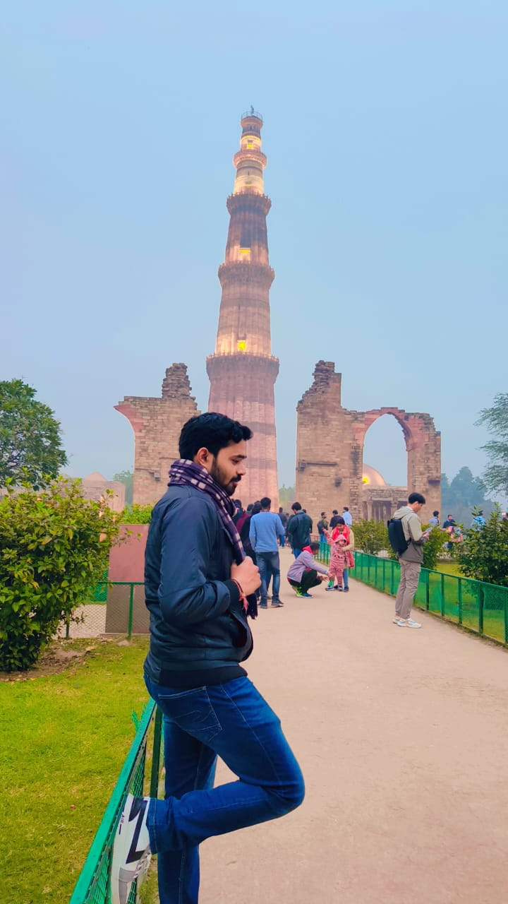

Yash Sinha

Objective
To work and learn about software programming and Web Development and implement all the skills learned in order to solve real life related problems in this domain.
Education
| Program |
Institution |
CGPA |
Completion |
| B.Tech(Computer Science and Engineering) |
PSIT College Of Engineering |
7.8 |
2023 |
| XII |
ASVM, CBSE Board |
78.02 |
2018 |
| X |
ASVM, CBSE Board |
87 |
2015 |
Technical Skills
Programming Languages
Subjects of Interest:
- Data Structure and Algorithms
- DBMS and SQL
- OOPs Concepts
Trainings and Achievements:
- Java Training Certification from Internshala.
- Silver Topper in Mathematics Olympiad in 7th standard.
- Gold Topper in Science Olympiad in 3rd standard.
- Silver Topper in Mathematics Olypiad in 7th standard.
- Maintained a consistent rank among top 3 ranking in the class from 1st to 8th standard.
Strengths
- Self-Motivated
- Optimistic.
- Passion for Learning.
- Goal Oriented.
Contact Me.